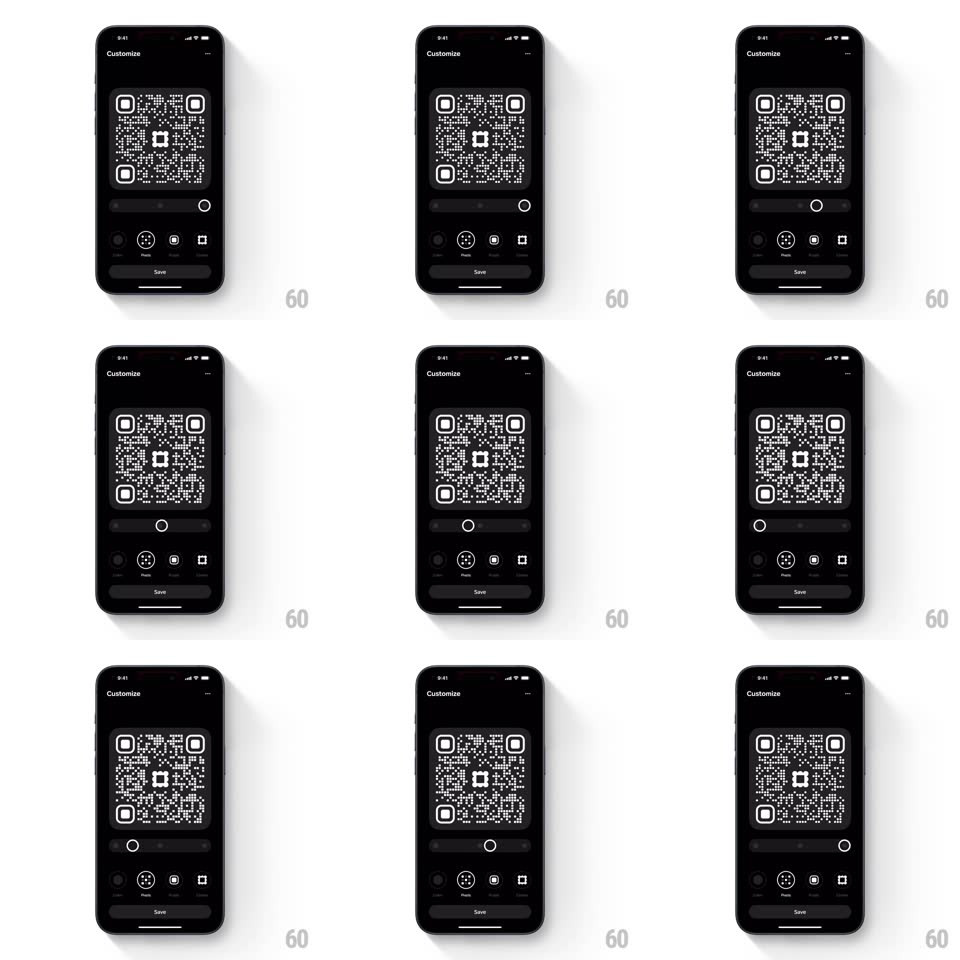

Media
Frame-by-frame

Rebuild this interaction 1:1: Family's QR pixels radius slider - in the "Customize" screen's Pixels tab, dragging the slider morphs every QR module's corner radius in real time, from sharp squares to fully round dots, with the slider thumb tracking the finger.

Rebuild this interaction 1:1: Family's QR pixels radius slider - in the "Customize" screen's Pixels tab, dragging the slider morphs every QR module's corner radius in real time, from sharp squares to fully round dots, with the slider thumb tracking the finger. ## Integration Integration: stack-agnostic spec - springs given as stiffness/damping, timed motions as duration + curve; map every value to your framework and animation library of choice. ## Scene Black "Customize" screen: large QR code preview, a horizontal slider (single value), customization tabs (Color / Pixels / Logo / Frame), Save button. ## Motion spec Pattern: real-time slider-driven shape morph. - Drag: the thumb follows the finger 1:1; every QR module's corner radius updates per frame (0 = sharp square -> 50% = full circle, direct mapping, no tween). - The morph is uniform - all modules, including the finder-square inner dots, take the same radius at the same time; finder-square outer rings keep their structure but round proportionally. - Release: the thumb settles with a tiny spring (spring ~480/30, 150ms); the radius stays exactly where dropped. - The QR preview scales subtly down (0.97) during the drag and springs back on release (spring ~400/24, 250ms). ## Calibration - The update is per-frame across hundreds of modules - batch the re-render; any visible stagger between modules reads as a bug. - The code remains scannable at every radius - module centers and sizes never change, only rounding. ## Reduced motion No scale-press effect; radius still updates live (functional control). ## Don't miss - Radius applies to the finder patterns too - leaving them square while modules round is the common miss. - The slider is a plain value track, not a stepped control - every intermediate radius is valid.